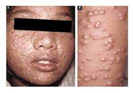

Get diagnosed with smallpox online
Their Website: https://www.emedicinehealth.com/script/main/hp.asp
Smallpox is a contagious disease that has plagued communities worldwide for thousands of years. It can often be life-threatening without proper care and treatment measures. Smallpox occurs upon being infected with the variola virus.
By 1980, smallpox had been eradicated worldwide as a result of coordinated efforts in an unprecedented global immunization campaign.
Smallpox has an incubation period of roughly 7 to 17 days, during which someone who is infected will present no symptoms and will not be infectious towards others. The first symptoms of smallpox typically appear approximately 10 to 14 days after infection, although this varies depending on the particular individual. Following the incubation period, an individual who is infected will suddenly begin to experience an array of flu-like symptoms, such as fever, physical discomfort, headache, severe back pain, severe fatigue, and vomiting. Flat, red spots will begin to appear on the face and arms first, before gradually spreading to other areas of the body. Within a few days, these spots will begin to fill with fluid and become small blisters all over the body. Eventually, the fluid inside these blisters will become pus, causing scabs to form over them days later. When the scabs fall off, individuals are left with deep scars all across their skin. Lesions may also develop inside the mucous membranes of the nose and mouth, promptly turning into sores that burst open.
No treatment or cure exists for smallpox. There is a vaccine that prevents it, however, the side effects and risks of that vaccine far outweigh its potential benefits amongst populations that are at low risk of exposure to smallpox. Today, the vaccine is only administered in the event of an outbreak. There are two types of vaccines currently available: ACAM2000 and a modified Ankara vaccine. ACAM2000 involves injecting a live virus that’s related to smallpox into the body to stimulate an immune system response and trigger antibody production. Its downfalls are that it can lead to serious complications, such as heart disease or brain infection. The second vaccine is typically administered to those who cannot take ACAM2000, who have impaired immune systems, or who have skin disorders. Immunity or partial immunity from a smallpox vaccine typically lasts at least 10 years. Still, most people who get smallpox survive. However, there are some varieties of smallpox that almost certainly result in death, and these are the varieties that are the most dangerous. Upon contracting a more severe variety of the variola virus, pregnant women and individuals with compromised immune systems are the most prone to experiencing severe symptoms of smallpox. Individuals who recover from smallpox are often left with deep scars from burst-open blisters, and some may even go blind due to the disease. As such, treatment for infected individuals places emphasis on relieving symptoms and promoting hydration. Antibiotics are commonly prescribed to those who develop bacterial infections in the lungs or skin. There are some antiviral drugs that have been developed in recent years, however, no studies have been conducted to test their efficacy in alleviating smallpox symptoms in those infected. In cases of an outbreak, individuals infected with smallpox should be kept in isolation in an effort to reduce transmission of the disease-causing virus. Everyone who previously had contact with infected individuals should be vaccinated as soon as possible so that they do not experience severe symptoms.
The smallpox-causing variola virus can be transmitted in different ways, including directly from person to person, indirectly from an infected person, and indirectly through contaminated surfaces. Direct transmission of the virus only occurs when an uninfected person has prolonged face-to-face contact with someone who is infected. Small droplets that enter the air when a person coughs, sneezes, or talks facilitate transmission of the variola virus, and thereby cause smallpox infection. The variola virus, when airborne, is sometimes also able to spread farther than just a few feet, circulating through ventilation systems in buildings and infecting people located several stories away from the initial infected individual. The variola virus is able to live on the surfaces of different items, and so it is possible to become infected with smallpox from exposure to contaminated objects, such as bedding and clothing. However, infection from contact with virus-contaminated items is far less common than infection from direct transmission. Since smallpox now only exists within controlled laboratory environments, it has the potential to be utilized as a means of biological warfare. Despite there being only a miniscule chance of smallpox being used as a weapon, the variola virus can be deliberately released to massacre populations. This is because the quick transmission of the virus (approximately 60% transmission rate between unvaccinated individuals) would allow it to quickly wreak havoc upon countries. In order to take precautionary measures against the weaponization of the variola virus, government officials in the US and other countries have stockpiled the smallpox vaccine should such a scenario ever play out.

Would you like to advertise your companies products on our website? Then go to this form https://www.enviremadstar.com/~/Opatient/index and fill out all the things to put your advertizement on our website!!
Get diagnosed with smallpox online
Their Website: https://www.emedicinehealth.com/script/main/hp.asp
brand name smallpox treatment
Their Website: https://www.siga.com/
Top medical center with high caseloads and experience with rare diseases
Their Website https://www.mayoclinic.org/